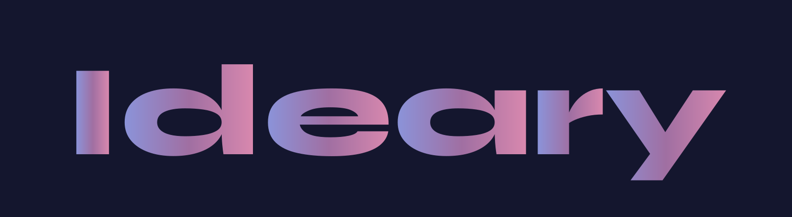
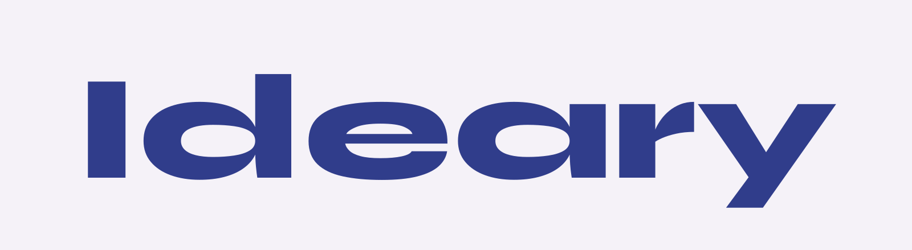
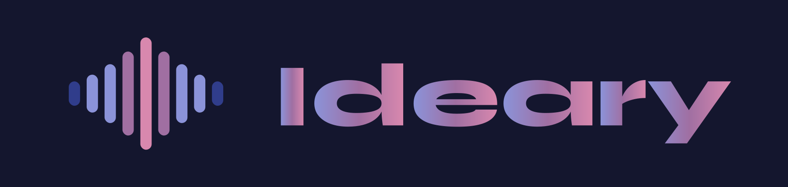
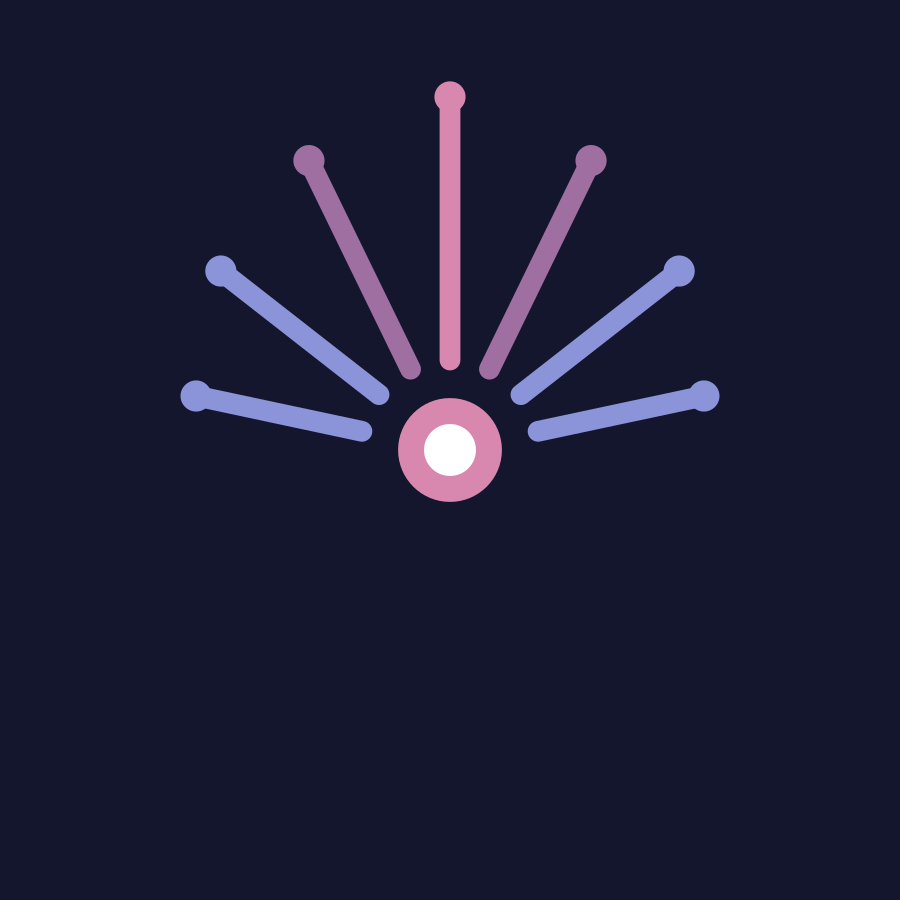
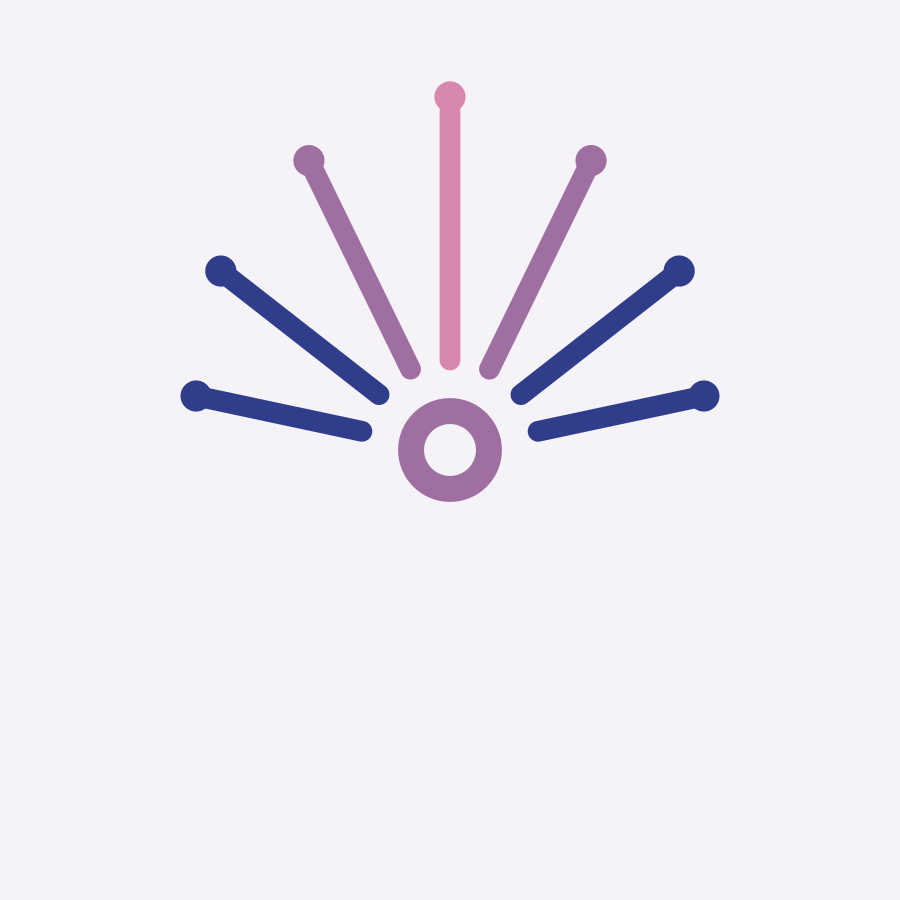
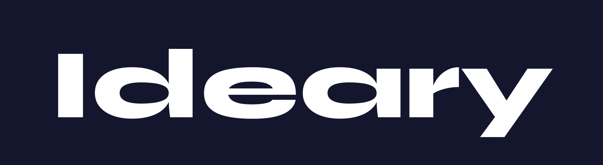
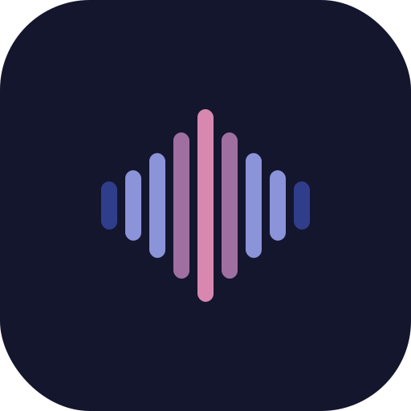
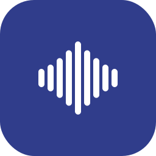

Il brand build completo di Ideary — lo strumento AI voice-first che trasforma un'idea detta in un workflow eseguibile. Diciotto prompt della branding library, eseguiti in pipeline concatenata dal naming alla governance, con le direzioni di logo generate.
Questo documento esegue in deep dive tutti e diciotto i prompt della branding prompt library, nella sequenza logica delle otto sezioni, applicandoli al brand Ideary. Ogni prompt usa come input gli output dei prompt precedenti — è una pipeline concatenata, non una raccolta di esercizi isolati — e parte dal Naming Decision Dossier già prodotto, di cui questo lavoro è la naturale continuazione ed espansione.
Nome: Ideary — conio trasparente che mantiene "idea", internazionale, con .ai e .com entrambi liberi. Payoff: "Where ideas take shape." · umbrella "Speak the spark. Ship the plan." Prodotto: tool AI voice-first per direttori creativi e piccoli studi — idea vocale archetipo workflow multi-tool con prompt pronti. Brand: rfs-design. Vincolo tecnico: il rebrand tocca ~15–20 stringhe user-facing; DB ideamotor-db, SALT, repo e URL restano invariati.
| Sezione | Prompt eseguiti | Cosa produce |
|---|---|---|
| 1 · Naming | BN-01 · BN-01b · BN-02 · BN-03 | Shortlist ragionata, gate di difendibilità, raffinamento, architettura dei nomi |
| 2 · Strategia | BP-01 · BP-02 · BP-03 · BP-04 | Positioning, scelta, audit & insight, piattaforma di marca |
| 3 · Logo/Visual | BL-01 · BL-02 · BL-03 | 3 direzioni logo (con immagini generate), audit, sistema visivo |
| 4 · Verbal | BV-01 · BV-02 · BV-03 | Tono di voce, tagline & payoff, localizzazione |
| 5 · Messaging | BM-01 · BM-02 | Messaging house, narrative system |
| 6 · Experience | BX-01 | Driver esperienziali e signature moments |
| 7 · Launch | GL-01 | Toolkit di lancio e asset |
| 8 · Governance | GV-01 | Brand book, RACI, guardrail, processi |
Convenzione evidenze, ereditata dal metodo brand-intelligence: FATTO = verificato su registro/fonte primaria · STIMA = giudizio su ricerca pubblica o inferenza strategica. Le valutazioni di rischio marchi sono qualitative e non sostituiscono una clearance legale formale.
Ricostruiamo la fase generativa che ha portato a Ideary, formalizzandola nel formato del prompt: brief, pool di nomi, top-10 con scoring, top-5 con rischi e tagline, tabella finalisti. Serve a rendere tracciabile la decisione, non a rimetterla in discussione.
| Settore | Software / AI creativa — productivity voice-first |
| Prodotto | App che trasforma un'idea detta a voce in un workflow AI multi-tool, con prompt pronti da incollare |
| Pubblico | Direttori creativi, piccoli studi, freelance senior della creatività |
| Brand vibe | curato · sicuro · caldo · preciso · lievemente letterario |
| Stile nome | coniato / ibrido trasparente (mantiene una radice comprensibile) |
| Mercati | IT + internazionale (EN come lingua-vetrina) |
| Da evitare | lessici saturi: wave / flow / synth / audio / pulse / spark; suffissi "-ly / -ify" da SaaS generico; deriva mind-mapping |
| Competitor | Swell AI, Riffusion, Synthflow, Sparqo; note apps (Otter, Voice Memos); idea-board (Milanote, Miro, Mural); chatbot singoli (ChatGPT) |
| Territorio | Candidati |
|---|---|
| Idea + luogo/fucina | Ideary, Idearium, Ideaforge, Ideabarn, Ideahouse, Notionary, Ideary Studio |
| Voce forma | Spokenform, Sayshape, Vocari, Utterframe, Dictaform, Speakcraft |
| Idea rotta/piano | Prow, Abbrivio, Cardine, Estro, Throughline, Runway, Vane |
| Conii corti "tech" | Crux, Deft, Rune, Brio, Praxo, Prompto, Krft, Orra |
| Artigiano / atelier | Atelio, Formary, Craftway, Studioline, Makery, Forgeline |
| Nome | Mem. | Chiar. | Unic. | Pron. | Vibe | Tot | Perché funziona |
|---|---|---|---|---|---|---|---|
| Ideary | 9 | 9 | 8 | 9 | 9 | 44 | Mantiene "idea", suffisso -ary = luogo; conio raro e trasparente |
| Estro | 8 | 6 | 9 | 8 | 8 | 39 | Ownable, ma "troppo italiano" per l'ambizione EN |
| Idearium | 8 | 7 | 7 | 7 | 8 | 37 | Bello ma vira su "archivio/erbario" deriva mind-map |
| Ideaforge | 7 | 8 | 5 | 8 | 7 | 35 | Chiaro ma "forge" è cliché e affollato |
| Throughline | 7 | 8 | 6 | 7 | 7 | 35 | Concetto giusto (dal caos al filo) ma lungo e già usato |
| Sayshape | 7 | 8 | 6 | 8 | 6 | 35 | Dice "voceforma" ma suona gadget, poco premium |
| Abbrivio | 7 | 5 | 9 | 6 | 8 | 35 | Splendida metafora di slancio, ma opaca fuori dall'IT |
| Vocari | 7 | 6 | 7 | 7 | 7 | 34 | Radice "voce" chiara, ma sa di plugin, poco caldo |
| Brio | 7 | 5 | 6 | 8 | 7 | 33 | Energia sì, ma già startup .ai e generico |
| Prow | 6 | 5 | 7 | 6 | 6 | 30 | Corto e nautico, ma già .ai occupato e opaco |
| Nome | 3 rischi principali | Tagline (<7 parole) |
|---|---|---|
| Ideary | 1 omonimi in altri settori (Ideary Works web-dev, Cosmetics, Coatings); 2 "ideario" ES = insieme di idee; 3 possibile lettura "diario di idee" | Where ideas take shape. |
| Estro | 1 percezione troppo italiana; 2 falso aggancio "estrogeno"; 3 .ai/.com incerti | Dì l'estro, spedisci il piano. |
| Idearium | 1 deriva erbario/archivio; 2 nome lungo; 3 affollato in wellness/edu | L'officina delle idee. |
| Throughline | 1 già termine di storytelling; 2 lungo; 3 dominio occupato | From spark to throughline. |
| Sayshape | 1 tono gadget; 2 compound EN piatto; 3 poco difendibile | Say it. Shape it. |
| Nome | Punteggio | Rischio principale | Tagline |
|---|---|---|---|
| Ideary | 44 | Omonimi in settori adiacenti (Ideary Works) | Where ideas take shape. |
| Estro | 39 | Percezione troppo italiana | Dì l'estro, spedisci il piano. |
| Idearium | 37 | Deriva "archivio di idee" | L'officina delle idee. |
| Throughline | 35 | Termine già in uso + dominio | From spark to throughline. |
| Sayshape | 35 | Tono gadget, poco premium | Say it. Shape it. |
Esito: Ideary vince nettamente — unico finalista con entrambi i domini liberi, punteggio più alto, e la metafora giusta ("casa/fucina dove l'idea prende forma", non "archivio").
Prima di affezionarsi o depositare, la shortlist passa il gate di difendibilità: dominio, marchio (classi Nizza 9 e 42, adiacenti 35/41), clash di prodotto/brand, e mindshare SEO. Non è consulenza legale: la clearance definitiva richiede registro ufficiale o consulente. Sotto, il pre-check su Ideary e i due follower più seri.
Nomi: Ideary, Estro, Idearium · Settore: software/AI (classi 9, 42; adiacenti 35, 41) · Vicini da evitare: grandi suite creative e note-app affermate · TLD: .ai (primario), .com, .app, .io
| Nome | Marchio | Prodotti | Dominio | SEO | Rischio | Verdetto |
|---|---|---|---|---|---|---|
| Ideary | giallo | giallo | verde | verde | basso-mod. | GO condizionato — acquisto domini subito, marchio da confermare |
| Estro | giallo | giallo | rosso | rosso | moderato-alto | NO-GO — domini e SERP presidiati, parola comune IT |
| Idearium | giallo | giallo | giallo | giallo | moderato | HOLD — praticabile ma deriva semantica "archivio" |
Livello 1 — esatta: Ideary · Idea ry — Livello 2 — contiene: *ideary* · ideary works — Livello 3 — jolly: idea*ry · ideary* — Livello 4 — fonetica: ideari, idearie, ideario[ES], idearia. Su TMview (EUIPO+UIBM+nazionali+WIPO), poi eSearch plus e USPTO; stato registrato+pending; territorio EUTM+IT+internazionali. Attenzione a "Ideary Works".
Regola del gate: nessun nome è "libero" senza aver controllato marchio + dominio + clash. Qui: rischio complessivo basso-moderato, unico punto da sciogliere in sede formale è Ideary Works.
Passata la shortlist al setaccio "premium", raffiniamo con un secondo scoring (memorabilità, chiarezza, unicità, pronuncia, premium feel) e, per i primi tre, cinque varianti che tengono il mood ma semplificano spelling e pronuncia. Chiude con i rischi culturali per mercato.
| Nome | Mem. | Chiar. | Unic. | Pron. | Premium | Tot | Motivazione (1 riga) |
|---|---|---|---|---|---|---|---|
| Ideary | 9 | 9 | 8 | 9 | 9 | 44 | Suona come un atelier di idee: caldo, colto, internazionale |
| Estro | 8 | 6 | 9 | 8 | 7 | 38 | Carattere forte ma legato al gusto italiano |
| Idearium | 8 | 7 | 7 | 7 | 8 | 37 | Elegante, latineggiante, ma un filo museale |
| Vocari | 7 | 6 | 7 | 7 | 7 | 34 | Premium ma freddo, dice "voce" più che "idea" |
| Sayshape | 7 | 8 | 6 | 8 | 5 | 34 | Chiaro ma consumer, poco da studio |
| Mercato | Lettura / rischio di "Ideary" |
|---|---|
| Italia | Neutro-positivo: "idea" trasparente; nessuna assonanza negativa. Ottima pronuncia. |
| UK / US | Legge come "idea + -ry" (come library, gallery): connota un luogo/collezione. Rischio lieve "diary". Positivo overall. |
| Spagna / LATAM | "Ideario" esiste (insieme di idee/ideologia): vantaggio di comprensibilità, ma da controllare nei marchi ES. |
| DACH / FR | Radice latina riconoscibile; pronuncia stabile; nessun falso amico noto. |
Con il nome madre fissato, definiamo come si relazionano prodotto, feature, eventuali sotto-brand e — punto delicato — gli asset legacy tecnici (repo, DB, URL) che non cambiano. Il principio guida: meno sotto-brand possibile, ogni nuovo nome deve guadagnarsi il diritto di esistere.
Un solo brand — Ideary — con lockup "by rfs-design". Con risorse da progetto singolo e una sola proposta di valore, un modello endorsed o house-of-brands diluirebbe senza motivo. Tutto vive sotto Ideary; le sezioni restano funzionali, non diventano mini-brand.
| Livello | Elemento | Criterio di naming |
|---|---|---|
| Master brand | Ideary | Coniato evocativo — l'unico nome "di marca" |
| Endorsement | by rfs-design | Firma dell'autore, lockup fisso, mai brand a sé |
| Prodotto | Ideary (l'app) | Coincide col master: un solo prodotto |
| Sezioni/feature | Cattura · Workflow · Progetti · Impostazioni · Le mie tecnologie | Descrittivi funzionali, registro caldo-artigiano, niente vezzi |
| Momenti-firma | es. "lo Spark" (l'atto di dettare) | Ammesso solo se guadagna valore narrativo; resta lessico, non sotto-brand |
| Asset | Azione | Perché |
|---|---|---|
| Stringhe user-facing (~15–20) | rinomina | manifest name/short_name, title, logo-text, welcome, system prompt, share |
| DB IndexedDB ideamotor-db | invariato | rinominarlo orfanerebbe lo storico progetti degli utenti |
| SALT in settings.js | invariato | cifra le API key salvate; cambiarlo le rende illeggibili |
| Repo / cartella / URL Pages | invariato | break di link e deploy; nessun beneficio user-facing |
"Ideary" è etichetta di brand: separazione netta tra ciò che l'utente legge (cambia) e ciò che il sistema usa (resta). Coerente con DECISIONS.md.
Dominio principale: ideary.ai · redirect: ideary.com .ai · handle: @ideary o @ideary.app dove libero, @getideary come fallback. Coerenza dell'handle prima dell'originalità; il sito vetrina resta separato dall'URL tecnico di GitHub Pages (che non cambia).
Il posizionamento fissa il posto di Ideary nella mente del pubblico: un esecutore tra l'idea e la produzione, non l'ennesima app di cattura o board. Statement canonico, tre registri, la griglia "chi siamo / chi non siamo", cinque messaggi per canale.
| Registro | Formulazione |
|---|---|
| Strategico | Ideary è il layer di esecuzione tra un'idea creativa e la sua produzione: voce in ingresso, workflow multi-tool orchestrato in uscita. |
| Emotivo | Dì la scintilla. Ideary dà a ogni idea una casa e una rotta — da ciò che hai appena detto a ciò che realizzerai. |
| Diretto / vendita | Parla la tua idea. Ottieni un workflow AI passo-passo con i prompt già scritti. Gratis con la tua chiave. |
| Ideary È | Ideary NON è |
|---|---|
| Un esecutore: idea piano realizzato | Un archivio/quaderno di idee |
| Voice-first, a bassissimo attrito | Un'altra dashboard o modulo da compilare |
| Orchestratore multi-tool (Perplexity, Claude, Midjourney…) | Un singolo chatbot mono-modello |
| Per direttori creativi e studi | Innovation-management enterprise |
| Bring-your-own-key, privato, a sostegno | SaaS in abbonamento che monetizza i dati |
| Opinionato e curato | Genericamente "AI" |
| Canale | Messaggio |
|---|---|
| Hero (sito) | "Speak your idea. Get the workflow." — Ideary trasforma un'idea detta in un workflow AI pronto: gli strumenti giusti, i prompt già scritti. |
| Bio Instagram | Voice AI workflow per creativi. Parla la scintilla, spedisci il piano. · by rfs-design |
| Elevator pitch (30s) | Ideary è uno strumento voice-first per direttori creativi: premi il mic e dici l'idea; riconosce il tipo di progetto, sceglie i tool AI giusti — Perplexity, Claude, Midjourney — e ti dà un workflow passo-passo con prompt densi e pronti. Gira sulla tua chiave, quindi è di fatto gratis, e resta sul tuo dispositivo. |
| Email B2B (freddo) | Oggetto: "Da idea detta a workflow, in 30 secondi". Corpo: mostri il flusso vocearchetipoprompt su un caso reale del destinatario, chiudi con demo di 5 minuti. |
| Adv breve (<90 char) | "Speak your idea. Ideary writes the AI workflow — free with your own key." (71 caratteri) |
Le tre varianti di BP-01 valutate rispetto all'obiettivo del brand (far capire e adottare un prodotto di categoria nuova) e sintetizzate in un mix per canale.
| Opzione | Chiar. | Differ. | Credib. | Fit target | Tot | Nota |
|---|---|---|---|---|---|---|
| Strategico | 8 | 9 | 7 | 8 | 32 | Preciso ma un filo freddo per il pubblico creativo |
| Emotivo | 9 | 7 | 9 | 8 | 33 | Il più on-brand: "casa + rotta" cattura l'anima del prodotto |
| Diretto | 8 | 9 | 6 | 9 | 32 | Ottimo per adv/conversione, meno per la narrazione di marca |
Guida emotiva per la marca ("Give every idea a home and a path"), spina dorsale strategica per il sito (il "layer di esecuzione"), taglio diretto per adv e onboarding. Un'unica frase-ombrello che le tiene insieme: "Speak the spark. Ship the plan."
Il quadro strategico che sostiene il posizionamento: contesto di categoria, mappa competitor su due assi, insight sul target, SWOT e piste di differenziazione. Nessuna conclusione senza il dato che la regge; le ipotesi sono segnate.
La categoria "AI creativa/produttività" nel 2025–26 è affollata di due archetipi opposti: da un lato i chatbot generalisti (una casella, un modello, mille usi), dall'altro le board/note-app che catturano ma non eseguono. Convenzioni ricorrenti: interfacce a chat, onboarding "scrivi qui", naming su wave/flow/synth, promesse di "10× produttività". Il cliché dominante è la cattura: tutti aiutano a raccogliere, pochi a fare il passo dopo. STIMA di categoria, basata su ricerca competitiva precedente (IdeaMotor Competitive Landscape).
Asse X: cattura esecuzione · Asse Y: mono-tool orchestrazione multi-tool
| Attore | CatturaEsec. | MonoMulti | Territorio |
|---|---|---|---|
| Voice Memos / Otter | cattura | mono | Trascrizione pura, nessun passo dopo |
| Milanote / Miro / Mural | archivio | mono | Board visive, richiedono lavoro manuale |
| ChatGPT / Claude (diretti) | medio | mono | Potenti ma una-casella, nessuna orchestrazione |
| Synthflow / Sparqo | medio | mono | Voceazione ma verticali (agenti/call) |
| Ideary | esecuzione | multi | White space: voceworkflow orchestrato multi-tool |
Spazio vuoto: l'angolo "esecuzione + multi-tool a partire dalla voce" è sostanzialmente disabitato. È lì che vive Ideary.
| Forze (interne) | Debolezze (interne) |
|---|---|
| Categoria propria (voceworkflow); privacy/BYOK; curatela dei prompt; equity visiva (waveform) | Progetto singolo, risorse limitate; dipendenza dal free tier Gemini; notorietà nulla |
| Opportunità (esterne) | Minacce (esterne) |
| White space non presidiato; onda "voice-first"; creativi stanchi dei chatbot generalisti | Big suite che aggiungono la feature; restringimento free tier; omonimo Ideary Works |
| Pista | Perché ora | Rischio |
|---|---|---|
| L'esecutore (voceworkflow) | Nessuno presidia l'esecuzione multi-tool: è la promessa più difendibile | Va spiegata: categoria nuova |
| Il curatore (prompt opinionati) | Il valore non è l'AI ma la ricetta giusta; contro il "genericamente AI" | Richiede mantenere la qualità nel tempo |
| Il privato (BYOK, on-device) | Sensibilità privacy alta; "gratis con la tua chiave" è prova, non claim | Meno leva di monetizzazione |
Pista guida scelta: l'esecutore, sostenuta dal curatore. Il "privato" è reason-to-believe, non headline.
Il nucleo che tiene insieme tutte le espressioni del brand: purpose, valori operativi, archetipo, personalità, promise, brand story. Ogni elemento è azionabile e distintivo — non intercambiabile con un competitor.
| Elemento | Contenuto | Nota d'uso |
|---|---|---|
| Purpose | Dare a ogni idea creativa una casa e una rotta: dal momento in cui la dici, al piano che la realizza. | Bussola, non claim di sito |
| Mission | Trasformare un'idea detta a voce nel workflow AI più giusto e specifico, con i prompt pronti da usare. | Cosa facciamo, oggi |
| Vision | Un mondo dove i creativi restano nel flusso: parlano, e la parte operativa si organizza da sola. | Dove andiamo |
| Valore 1 · Cura | Prompt opinionati e testati, non output generici. In pratica: ogni archetipo ha ricette rifinite, non template vuoti. | Comportamento |
| Valore 2 · Attrito zero | La voce prima della tastiera. In pratica: dall'idea al workflow in un gesto, mai un modulo da compilare. | Comportamento |
| Valore 3 · Rispetto | I tuoi dati restano tuoi. In pratica: BYOK, on-device, nessuna monetizzazione dei contenuti. | Comportamento |
| Valore 4 · Concretezza | Consegniamo passi, non ispirazione. In pratica: ogni output è incollabile e finito. | Comportamento |
| Archetipo | Creator (dominante) + Magician (secondario): dà forma alle cose e trasforma la voce in piano. | Guida tono e visual |
| Personalità | Curato · sicuro · caldo · preciso · lievemente letterario. | 5 tratti, dal dossier verbal |
| Brand promise | Parla la scintilla: ti diamo la rotta e gli strumenti per realizzarla. | Una frase, verificabile |
Ideary nasce da un fastidio quotidiano: le idee migliori arrivano quando meno puoi fermarti a scriverle — sotto la doccia, in metro, tra due riunioni. E quando finalmente ti siedi, la scintilla è già fredda, oppure ti perdi tra dieci strumenti AI cercando "da dove comincio". IdeaMotor era la prima risposta: dì l'idea, ottieni un piano. Ma il nome parlava di macchine, non di creatività. Così è diventato Ideary — il luogo dove l'idea prende forma, come una library o una gallery, ma di cose ancora da fare. Premi il microfono, parli; Ideary riconosce che tipo di progetto è, sceglie gli strumenti giusti e ti restituisce un workflow con i prompt già scritti. Gratis, con la tua chiave, sul tuo dispositivo. Non un altro posto dove archiviare idee: il posto dove diventano piani. Where ideas take shape.
Coerenza verificata: purpose ("casa + rotta") valori (cura, attrito, rispetto, concretezza) promise ("scintilla rotta + strumenti") story. Nessun elemento è un placeholder.
Tre direzioni di logo per Ideary, coerenti con la personalità (curato · sicuro · caldo · preciso · lievemente letterario) e con la palette già in equity. Per ciascuna: stile, tipografia, palette con significato, metafora, i prompt usati per il generatore di immagini, e le immagini effettivamente generate. Almeno una direzione sfida il cliché "onda audio" del settore voice-AI.
Posizionamento (1 frase): il layer di esecuzione tra idea detta e produzione. Personalità: curato, sicuro, caldo, preciso, letterario. Riferimenti: atelier tipografico, strumenti pro audio, editoria colta. Da evitare: microfoni ovvi, fumetti "lampadina-idea", gradient arcobaleno AI, glow al neon. Touchpoint: PWA/app icon, favicon, sito, social, firma email.
Stile: minimal, geometrico, contemporaneo. Il nome fa tutto il lavoro. Tipografia: Syne ExtraBold — grottesca geometrica larga, un po' "art gallery", perfetta per il tono colto-caldo. Palette: gradiente periwinklemalva su fondo indigo-carbone. Significato: il malva dice creatività e premium senza gridare; l'indigo dà fiducia e profondità; il gradiente suggerisce la trasformazione (voceforma). Metafora: nessuna icona — la parola "Ideary" è già un luogo (come library, gallery).


Prompt A: "Minimal flat vector wordmark logo, the word 'Ideary' in a wide geometric contemporary sans-serif similar to Syne, extra-bold, letters filled periwinkle-to-mauve (#8b93d9 #d888ae), deep indigo-charcoal background #14162e, the dot of the 'a' hints a tiny spark, premium and calm, crisp vector, no 3D, no photoreal."
Prompt B (negativi): "…same wordmark, single-weight, high legibility; exclude: microphone icon, lightbulb, rainbow gradient, neon glow, drop shadow, background texture."
Stile: lockup orizzontale, simbolo + parola. Simbolo: la waveform simmetrica che cresce dal centro — già signature dell'app — con la lettura doppia "onda della voce" + "luogo che accoglie" (le barre come una piccola volta/nido, eco del suffisso -ary = luogo). Tipografia: Syne Bold. Palette: barre da malva al centro a periwinkle/indigo ai bordi. Significato: continuità con l'equity visiva accumulata; il centro caldo (la scintilla) che si struttura verso l'esterno.

Prompt A: "Flat vector logo lockup: symmetric audio waveform of rounded vertical bars growing taller from the center outward, the silhouette subtly suggesting a nest/home — a place where a voice takes shape — next to the wordmark 'Ideary' in a Syne-like bold sans; bars mauve #d888ae at center to periwinkle #8b93d9 at edges; deep indigo background #14162e; crisp, premium, no 3D." · Prompt B (negativi): "…exclude realistic microphone, equalizer clichés, neon glow, gradient mesh, drop shadow."
Stile: simbolo astratto, senza onda audio — la direzione che rompe col cliché del settore. Concept: una scintilla detta che prende struttura — un punto centrale (la voce/idea) da cui si dipartono linee ordinate che si assestano in una forma (l'idea che diventa piano). Tipografia (in lockup): Syne. Palette: malva al cuore, periwinkle/indigo nelle diramazioni. Significato: "idea forma" reso senza appoggiarsi all'audio; più concettuale, adatto se in futuro si vuole smarcarsi dalla waveform.


Prompt A: "Abstract flat vector logo symbol: a small central spark/dot that unfolds into an ordered geometric structure (lines assembling into a neat shape), 'idea becoming a plan', palette mauve #d888ae + periwinkle #8b93d9 + indigo #303d8b on #14162e, iconic app-icon-ready, no text." · Prompt B (negativi): "…exclude waveform, microphone, lightbulb, brain, photorealism, 3D, neon."
Monocromatico — il wordmark e la waveform reggono in una sola tinta (bianco su scuro / indigo su chiaro).

App icon & favicon — la waveform, ridotta a tile con safe-zone, resta leggibile anche a 16px.


Prova su fondo chiaro, scuro e fotografico: usare sempre la versione con contrasto adeguato (mono su foto). Direzione raccomandata: D2 (lockup) come primario, D1 come wordmark di servizio, D3 come esplorazione per un eventuale futuro smarcamento dall'onda.
Nota di metodo: le direzioni qui presentate sono state rese come asset vettoriali (SVG+PNG) prodotti su misura in palette e tipografia esatte, e salvati nella cartella del progetto (brand-assets/logos/). In parallelo sono state generate esplorazioni raster con il modello di image-generation, mostrate a parte.
Oggetto: la waveform simmetrica (malva/indigo/periwinkle su tile scuro) già in uso, valutata rispetto al nuovo nome e posizionamento di Ideary.
| Direzione | Cosa cambia |
|---|---|
| Soft (consigliata) | Tieni la waveform, aggiungi il wordmark "Ideary" in Syne; rifinisci safe-zone e versione mono. Rischio minimo, massima continuità. È la Direzione 2 di BL-01. |
| Media | La waveform evolve verso un motivo di "nido/casa/crescita" (eco del suffisso -ary = luogo), senza perdere l'onda. |
| Radicale | Nuovo simbolo attorno a "idea forma" (la scintilla che si struttura). È la Direzione 3 di BL-01. Solo se si vuole tagliare col passato. |
Il sistema visivo essenziale oltre al logo, riassunto in una guideline operativa da una pagina. Ogni scelta è legata alla personalità del brand; l'accessibilità (contrasto) è requisito, non optional.
| Colore | HEX | Ruolo | Contrasto / accessibilità |
|---|---|---|---|
| Indigo carbone | #14162e | Sfondo primario (dark) | Base; testo bianco AAA sopra |
| Indigo | #303d8b | Colore istituzionale, titoli su chiaro | AA su bianco (testo >=16px) |
| Malva | #a06fa2 | Accento primario, dettagli | Usare per accenti, non per testo lungo su bianco |
| Malva chiaro | #d888ae | Accento caldo, highlight, centro onda | Solo decorativo / testo grande su scuro |
| Periwinkle | #8b93d9 | Secondario freddo, bordi onda | Decorativo; su scuro ok |
| Off-white / grigio | #f5f2f8 | Sfondo chiaro, superfici | Base chiara; testo indigo/ink sopra |
| Ruolo | Carattere | Feeling & uso |
|---|---|---|
| Display | Syne (700/800) | Grottesca geometrica larga; titoli, wordmark, numeri. Colto, caldo, distintivo. Uppercase per kicker/label. |
| Testo | DM Sans (400/500/600) | Sans neutro, ottima leggibilità a corpo piccolo; body, tabelle, UI. |
| Scala | — | Display 34/19pt · H3 12.5pt · body 10pt · nota 8.5pt. Interlinea generosa (1.5) sul corpo. |
Stile: flat, geometrico, poche forme; icone lineari coerenti con lo spessore della waveform. Trattamento: tinte piatte dalla palette, niente ombre né glow. Foto (quando servono): desaturate verso indigo/malva, mai stock "business handshake". Da evitare: microfoni fotografici, lampadine, cervelli, gradient arcobaleno AI.
Griglia arieggiata, margini ampi, molto respiro attorno al testo (registro "editoriale colto", non "dashboard densa"). Blocchi in card con angoli morbidi (8–10px), bordi tenui malva/linea. Un solo accento caldo per vista: la pagina non deve mai sembrare un arcobaleno.
Come "suona" Ideary a parole, in modo coerente su tutti i canali. Colma il gap segnalato nel Naming Dossier (la library non aveva un prompt verbal dedicato: qui è pieno). Personalità di riferimento: curato · sicuro · caldo · preciso · lievemente letterario.
| Principio | Questo sì | Questo no | Esempio on-brand |
|---|---|---|---|
| Concreto, non ispirazionale | Verbi del fare, passi, strumenti nominati | Motivazionale vago, "sblocca il tuo potenziale" | "Dì l'idea: ti diamo i tre passi e i prompt pronti." |
| Caldo, non tecnico | Parola umana, ritmo breve | Gergo AI, sigle, "leverage synergies" | "Parla, e la parte noiosa si organizza da sola." |
| Sicuro, non hype | Affermazioni asciutte, prova | "Rivoluzionario", "10× produttività", superlativi | "Non archivia le idee. Le mette in produzione." |
| Colto ma leggibile | Un'immagine letteraria ben piazzata | Barocco, frasi lunghe, autocompiacimento | "Ogni idea merita una casa e una rotta." |
| Asse | Posizione di Ideary | Perché |
|---|---|---|
| Formale Informale | medio-informale (dà del "tu") | Parla a pari a un creativo, non a un buyer enterprise |
| Serio Ironico | serio con sorriso | Sicurezza calda; ironia rara e mai a spese dell'utente |
| Sobrio Espressivo | sobrio-espressivo | Poche parole, ma scelte; un'immagine per volta |
| Neutro Opinionato | opinionato | Il valore è la curatela: Ideary ha una posizione sui tool giusti |
scintilla · idea · rotta · casa · forma · piano · workflow · passo · prompt pronto · strumento giusto · dì / parla / spedisci · curato · tuo (dati)
rivoluzionario · disruptive · AI-powered (come claim) · sinergia · sbloccare il potenziale · game-changer · "il futuro di…" · potenziamento · leva
Tic/cliché vietati: emoji a raffica, esclamativi multipli, «razzi», frasi che iniziano con "Immagina di…", claim comparativi diretti sui competitor.
| Contesto | Regola | Esempio |
|---|---|---|
| CTA | Verbo + esito, mai "Invia" | "Parla la tua idea" · "Ottieni il workflow" |
| Errore | Umano, senza colpa, con via d'uscita | "Non ho afferrato bene. Riprova a dirlo, con calma." |
| Empty state | Invito caldo, non vuoto freddo | "Ancora niente qui. Premi il mic e dì la prima idea." |
| Onboarding | Rassicura su privacy + un solo gesto | "La tua chiave resta sul tuo dispositivo. Dicci l'idea, al resto pensiamo noi." |
| Canale | Resa |
|---|---|
| Hero sito | Speak your idea. Get the workflow. |
| Social | La tua idea migliore è arrivata in metro. Diglielo. Ideary la trasforma in un piano prima che scenda. |
| Oggetto: "Da idea detta a workflow, in 30 secondi." Corpo asciutto, un caso reale, una CTA. | |
| Push | Nuova idea in testa? Dilla adesso — ci pensa Ideary. |
| Adv breve | Speak the spark. Ship the plan. |
Genera, testa e seleziona il payoff che accompagna il nome. Beneficio: dall'idea detta al piano eseguibile. Tensione: la scintilla che si spegne / il caos degli strumenti. Vincolo: <7 parole, niente claim comparativi, deve funzionare accanto a "Ideary".
| Funzionale / diretto | Emotivo / evocativo |
|---|---|
| Speak your idea. Get the workflow. | Where ideas take shape. |
| From voice to workflow. | Speak the spark. Ship the plan. |
| Say it. Ship it. | Give every idea a home and a path. |
| Your idea, executed. | The place ideas become plans. |
| The workflow behind your idea. | Dì la scintilla. |
| Prompts ready. Idea shipped. | Ogni idea, una rotta. |
| From spark to steps. | Parla. Prende forma. |
| Talk. We'll map the tools. | — |
| Tagline | Chiar. | Distint. | Memor. | Fit tono | Tot | Rischio |
|---|---|---|---|---|---|---|
| Where ideas take shape. | 9 | 8 | 9 | 9 | 35 | Generico se isolato; brilla accanto a "Ideary" |
| Speak the spark. Ship the plan. | 8 | 9 | 9 | 9 | 35 | Allitterazione forte; verificare traduzione IT |
| Speak your idea. Get the workflow. | 10 | 7 | 7 | 8 | 32 | Chiarissima ma poco "marca", più adv |
| Give every idea a home and a path. | 8 | 8 | 7 | 9 | 32 | Bella ma lunga (7 parole) |
| From voice to workflow. | 9 | 6 | 7 | 7 | 29 | Descrittiva, poca emozione |
| EN | IT (transcreata) |
|---|---|
| Where ideas take shape. | Dove le idee prendono forma. |
| Speak the spark. Ship the plan. | Dì la scintilla. Spedisci il piano. |
| Speak your idea. Get the workflow. | Parla la tua idea. Ottieni il workflow. |
| Give every idea a home and a path. | A ogni idea, una casa e una rotta. |
| From voice to workflow. | Dalla voce al workflow. |
Payoff principale: "Where ideas take shape." — istituzionale, sotto il logo, firma. Riserva 1 (campagna/adv): "Speak the spark. Ship the plan." — l'umbrella energica. Riserva 2 (spiegazione/hero): "Speak your idea. Get the workflow." Letti ad alta voce accanto al nome: "Ideary — where ideas take shape" scorre; "Ideary — speak the spark, ship the plan" ha ritmo. Entrambi tengono.
Portare la voce di Ideary tra IT (origine) e EN (vetrina internazionale), e verso ES/DACH, mantenendo l'identità. Transcreazione, non traduzione: si adatta l'effetto, non le parole.
| Non cambia mai (invariante) | Si adatta (per mercato) |
|---|---|
| Personalità (curato/sicuro/caldo/preciso/letterario); i 4 principi; il "tu"; concretezza; no-hype | Registro fine, riferimenti culturali, grado di ironia, idiomi, lunghezza delle frasi |
| Mercato | Registro & sensibilità | Come si sposta la voce |
|---|---|---|
| IT | Caldo, un po' letterario, "tu" naturale | Origine: massima libertà espressiva; l'immagine letteraria è a casa |
| EN (UK/US) | Più asciutto, verbo-primo, meno aggettivi | Frasi più corte; l'allitterazione funziona ("spark/ship"); evitare il lirismo IT tradotto |
| ES/LATAM | Caloroso, "tú", "ideario" è un vantaggio | Sfruttare la trasparenza latina; attenzione a "diario"; tono cordiale |
| DACH | Preciso, sobrio, prova concreta apprezzata | Ridurre il calore lirico; enfatizzare privacy/BYOK e affidabilità |
| Concetto | IT | EN | Nota |
|---|---|---|---|
| la scintilla | la scintilla | the spark | ok in entrambe; centrale nel brand |
| casa + rotta | una casa e una rotta | a home and a path | tenere la coppia, è la metafora-chiave |
| prompt pronti | prompt pronti (da incollare) | ready-to-paste prompts | concretezza, non "AI magic" |
| spedisci | spedisci / porta a casa | ship | "ship" è idiomatico tech in EN; in IT "spedisci" regge il gioco |
| IT | EN |
|---|---|
| Dì la scintilla. Spedisci il piano. | Speak the spark. Ship the plan. |
| Non archivia le tue idee: le mette in produzione. | It doesn't file your ideas away. It puts them into production. |
La casa di messaggi che trasforma posizionamento e benefici in argomenti coerenti e riutilizzabili. Ogni pilastro poggia su un proof point reale, mai su un claim nudo; si parte dai bisogni del target, non dal catalogo feature.
Parli, non compili. L'idea entra come voce, esce come piano.
Proof: input vocale nativo; nessun form; dall'idea al workflow in un tocco.
Non un chatbot solo: gli strumenti AI giusti per ogni passo.
Proof: riconosce l'archetipo di progetto e monta un flusso su Perplexity, Claude, Midjourney… con prompt densi già scritti.
Gira sulla tua chiave, resta sul tuo dispositivo.
Proof: BYOK (Gemini free tier) di fatto gratis; dati in locale (IndexedDB), nessuna monetizzazione dei contenuti.
| Obiezione | Risposta di messaggio |
|---|---|
| "È l'ennesimo tool AI." | Non è un modello in più: è ciò che decide quali usare e come, con i prompt pronti. Orchestrazione, non un'altra casella. |
| "Posso già farlo con ChatGPT." | Puoi — se sai già il flusso e scrivi tu ogni prompt. Ideary ti dà il flusso giusto in 30 secondi, a voce. |
| "Non voglio dare i miei dati." | Non li prendiamo. La chiave è tua, i progetti restano sul tuo dispositivo. |
| "Perché dovrei pagarlo?" | Non paghi l'uso (è gratis con la tua chiave). Un piccolo sostegno tiene viva la curatela. |
1 riga: Dì l'idea, ottieni il workflow AI pronto.
3 righe: Ideary è lo strumento voice-first per direttori creativi. Premi il mic e dici l'idea: riconosce il tipo di progetto, sceglie i tool AI giusti e ti dà un workflow passo-passo con i prompt già scritti. Gratis con la tua chiave, privato sul tuo dispositivo.
Paragrafo (elevator): Le idee migliori arrivano quando non puoi fermarti a strutturarle. Ideary le raccoglie a voce e le trasforma subito in un piano operativo: capisce che tipo di progetto è, orchestra gli strumenti AI adatti — Perplexity, Claude, Midjourney — e ti consegna un workflow con prompt densi e pronti da incollare. Non un archivio di idee: il posto dove diventano piani. E poiché gira sulla tua chiave e resta sul tuo dispositivo, è di fatto gratis e privato.
| Canale | Pilastro primario | Taglio |
|---|---|---|
| Sito (hero) | Voice-first | Beneficio immediato + demo |
| Sales / email | Orchestrazione | Caso reale, dimostrazione |
| Social | Voice-first + curatela | Momenti "idea in metro" |
| Adv | Voice-first | Payoff + "free with your key" |
| Community / privacy-aware | Tuo e privato | BYOK, on-device |
La messaging house diventa una matrice operativa: audience × canale × obiettivo key message + proof + formato. Distingue i must-carry (invarianti) dai flex (contestuali).
| Audience | Canale | Obiettivo | Key message | Formato |
|---|---|---|---|---|
| Direttore creativo | Sito | Awareness | Speak your idea. Get the workflow. | Hero + demo 20s |
| Direttore creativo | Social | Considerazione | La tua idea migliore è arrivata in metro — dilla. | Reel / carosello |
| Piccolo studio | Conversione | Da idea detta a workflow, sul vostro prossimo brief. | Email + caso reale | |
| Piccolo studio | Sito/pricing | Conversione | Gratis con la vostra chiave. Un sostegno, non un abbonamento. | Pagina prodotto + CTA €5 |
| Creativo privacy-aware | Community | Retention/trust | La tua chiave, il tuo device, i tuoi progetti. | Post tecnico / FAQ |
| Early adopter | Product Hunt | Awareness | Voice AI workflow, multi-tool, BYOK. | Launch post + GIF |
| Must-carry (sempre) | Flex (contestuale) |
|---|---|
| Voice-first · orchestrazione multi-tool · prompt pronti · gratis con la tua chiave / privato · "where ideas take shape" | Il caso d'uso specifico · l'archetipo mostrato · la leva emotiva ("idea in metro") · il canale-formato · l'accento IT vs EN |
| Formato | Resa di "voce workflow" |
|---|---|
| Hero | Speak your idea. Get the workflow. (+ pulsante mic animato) |
| Social | 3 secondi per dirla, 30 per averla in piano. (reel) |
| Oggetto: "La tua idea, già in workflow." Corpo: flusso vocearchetipoprompt su un caso loro. | |
| Adv | Speak the spark. Ship the plan. — free with your own key. |
Regole di coerenza: ogni messaggio porta almeno un must-carry e un proof; il formato si adatta al canale (mai copincolla); un solo call-to-action per pezzo.
Come Ideary si comporta e si sente lungo il journey. L'esperienza deve incarnare i valori (attrito zero, cura, rispetto, concretezza), non solo comunicarli. Priorità ai momenti ad alto impatto.
| Driver | Cosa rende riconoscibile l'esperienza |
|---|---|
| Un gesto, non un modulo | Ogni interazione parte dalla voce; la tastiera è l'eccezione, non la regola. |
| Consegna, non suggerimenti | L'utente riceve passi finiti e prompt incollabili, non "ispirazione". |
| Rispetto silenzioso | Privacy visibile ma non ansiogena: rassicura una volta, poi sparisce. |
| Calore curato | Microcopy caldo, ritmo breve, un'immagine per volta; mai freddo né hype. |
| Touchpoint | Obiettivo | Principi / tono | Messaggio chiave |
|---|---|---|---|
| Primo avvio | Capire in 10s + dare la chiave | Caldo, rassicurante, un gesto | "La tua chiave resta con te. Dicci l'idea." |
| Cattura vocale | Ridurre l'attrito a zero | Immediato, silenzioso, reattivo | Pulsante mic vivo; feedback d'onda |
| Riconoscimento archetipo | Dare fiducia sulla comprensione | Sicuro, trasparente | "Ho capito: è un progetto di [tipo]." |
| Workflow consegnato | Far percepire il valore | Concreto, ordinato | Passi numerati + prompt pronti da copiare |
| Ritorno / storico | Continuità e apprendimento | Familiare, curato | "Bentornato. Riprendiamo da dove eri." |
| Sostegno (€5) | Chiedere senza pressione | Onesto, leggero | "Se ti è utile, un caffè tiene viva la cura." |
Metriche suggerite: time-to-first-workflow (obiettivo <30s) · tasso di copia dei prompt · progetti ripresi (ritorno) · rating "centrato/eccellente" per archetipo · % onboarding completati con chiave.
Il piano per lanciare il rebrand Ideary (da IdeaMotor) e la pagina prodotto. Si parte dagli obiettivi, non dagli asset; must-have separati da nice-to-have per proteggere la data.
| Obiettivo | KPI |
|---|---|
| Far conoscere Ideary come categoria nuova | Visite pagina prodotto; menzioni; iscritti/attivazioni |
| Attivare i primi utenti reali (con chiave) | % onboarding completati; time-to-first-workflow |
| Validare la disponibilità al sostegno | N. sostegni €5; tasso su utenti attivi |
| Fase | Idea narrativa |
|---|---|
| Teasing | "IdeaMotor sta diventando qualcosa." Anticipa il nome e l'onda: dì la scintilla… |
| Reveal | Ideary — where ideas take shape. Il nuovo nome, il perché, la demo voceworkflow. |
| Proof | Casi reali per archetipo; "guarda un brief diventare workflow in 30s". |
| Sustain | Serie "idea della settimana"; ricette-prompt; testimonianze; note di privacy. |
| Fase | Canale | Asset | Messaggio |
|---|---|---|---|
| Teasing | Social, mailing | Teaser onda animata | Sta prendendo forma. |
| Reveal | Pagina prodotto, Product Hunt, social | Landing, GIF demo, post launch | Ideary — speak the spark, ship the plan. |
| Proof | Blog/note, email | Casi per archetipo, video 30s | Dal brief al workflow, davvero. |
| Sustain | Social, newsletter | Serie ricette-prompt | Una scintilla alla settimana. |
| Quando | Cosa |
|---|---|
| Pre (settimana −2/−1) | Domini registrati; ricerca marchi 9/42 avviata; rebrand stringhe pronto in staging; logo/asset finalizzati; teaser online. |
| Reveal (giorno 0) | Deploy rebrand (bump cache); pagina prodotto live; post reveal + demo; CTA sostegno attiva. |
| Post (settimana +1/+4) | Proof e sustain; raccolta feedback/rating; iterazione copy. |
Checklist readiness pre-lancio: domini live marchi verificati (occhio a Ideary Works) stringhe rebrandate senza toccare DB/SALT/URL cache bumpata logo mono+favicon ok payoff bloccato link sostegno testato demo registrata.
Come Ideary resta coerente nel tempo. In un progetto singolo, la governance è leggera ma reale: pochi guardrail forti, documentazione trovabile, un processo minimo. Pochi guardrail rispettati valgono più di mille regole ignorate.
| Modulo | Contenuto · fonte in questo dossier |
|---|---|
| 00 · Fondamenta | Nome, naming architecture, piattaforma di marca Sez. 1, 2 |
| 01 · Logo | Lockup, varianti, safe-zone, misuse Sez. 3 (BL-01/02) |
| 02 · Visual | Palette, tipografia, iconografia, layout Sez. 3 (BL-03) |
| 03 · Verbal | Tono, lessico, microcopy, tagline, localizzazione Sez. 4 |
| 04 · Messaging | Messaging house, narrative system Sez. 5 |
| 05 · Experience | Driver, signature moments, do/don't Sez. 6 |
| Attività | Decide (A) | Esegue (R) | Consultato (C) |
|---|---|---|---|
| Identità, payoff, palette | Riccardo | Riccardo | questo dossier |
| Copy user-facing | Riccardo | Riccardo / AI | guardrail verbal |
| Asset visivi / social | Riccardo | Riccardo / freelance | brand book |
| Modifiche tecniche user-facing | Riccardo | Riccardo | DECISIONS.md |
| Ambito | Regola |
|---|---|
| Visual | Palette esatta (malva/indigo/periwinkle); Syne solo display; waveform mai distorta; un accento caldo per vista. |
| Verbal | No hype ("rivoluzionario", "AI-powered" come claim); "tu"; concretezza; payoff bloccato. |
| Messaging | Ogni claim ha un proof; "gratis con la tua chiave / privato" sempre onesto; niente claim comparativi. |
| Tecnico | "Ideary" è etichetta di brand: mai rinominare DB ideamotor-db, SALT, repo, URL. |
Questo dossier ha eseguito in pipeline concatenata tutti e diciotto i prompt della branding library applicati a Ideary: dal naming (BN-01 BN-03) alla strategia (BP-01 BP-04), dal logo e sistema visivo (BL-01 BL-03, con le direzioni di logo generate e salvate in brand-assets/logos/) alla verbal identity (BV-01 BV-03), dal messaging (BM-01, BM-02) fino a experience, lancio e governance (BX-01, GL-01, GV-01). Ogni sezione ha usato come input gli output delle precedenti e il Naming Decision Dossier esistente.
I prossimi passi operativi restano quelli della checklist di chiusura del naming: registrare i domini, completare la ricerca marchi formale nelle classi 9/42 (attenzione a Ideary Works), applicare il rebrand alle stringhe user-facing senza toccare DB/SALT/URL, finalizzare il logo lockup con la versione mono, e aggiornare DECISIONS.md.
Metodo: project branding-prompt-library (18 prompt, 8 sezioni). Etichette-evidenza FATTO/STIMA dal metodo brand-intelligence. Le valutazioni di rischio sono qualitative; la clearance marchi definitiva richiede registro ufficiale o consulente. Loghi in-documento resi come asset vettoriali su misura; esplorazioni raster generate a parte con modello di image-generation.